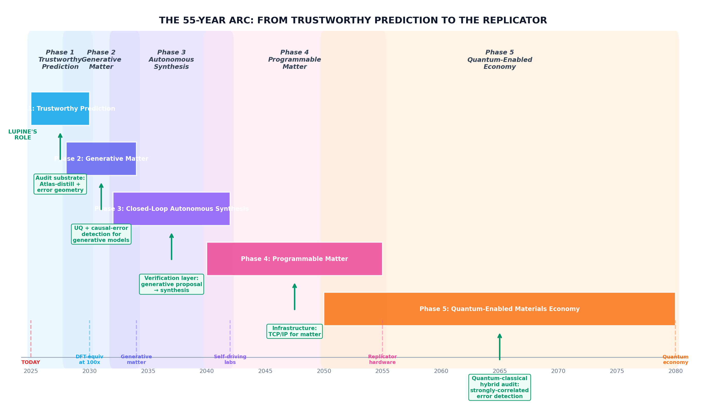

The 55-year arc from trustworthy molecular prediction
to civilization-scale programmable matter
— and why the audit layer is the load-bearing stratum
The device from Star Trek — speak a molecule's name and watch it materialize — is not a metaphor. It is a specification. Every subsystem required to build it exists in some form today: machine learning models that predict atomic forces faster than quantum mechanics, generative algorithms that propose novel crystal structures, robotic laboratories that synthesize and characterize matter without human intervention, and manufacturing techniques that approach atomic precision for narrow material classes. None of these subsystems are mature. None are integrated. And critically, none are trustworthy enough to be deployed at the scale where their integration would matter.
The gap between today's capabilities and the Replicator is not a single breakthrough waiting to happen. It is a stack of five sequential phases, each building on the one below it, spanning roughly fifty-five years from today. The foundation of that stack — the stratum that everything else rests on — is the subject of the mathematical work we have just completed. It is not the flashiest layer. It will never be on the cover of a magazine. But without it, the entire edifice collapses into a pile of confidently wrong predictions dressed up as engineering.
Before describing the five phases, it is worth stating the commitments that govern how this work is done. They are not marketing positions. They are operational constraints that shape every technical and commercial decision.

This is where we are today. Machine learning interatomic potentials — neural networks trained to predict the forces between atoms — have crossed a critical threshold. Models like MACE, Equiformer, and the OMat24 family achieve accuracy comparable to density functional theory (DFT), the workhorse quantum method, while running roughly one hundred times faster. A molecular dynamics simulation that would take a year with DFT can finish in a few days with an MLIP. This is not incremental improvement. It is a discontinuity.
But the discontinuity creates a new problem. When simulations were slow, you ran few of them, and you validated each one carefully against experiment or quantum methods. Now you can run millions. You can screen entire compositional spaces. You can explore configurations no human would have thought to test. And somewhere in those millions of simulations, the model is making predictions about atomic arrangements it has never seen — crystal structures far from its training distribution, extreme temperatures and pressures, exotic chemical environments. It produces numbers with six decimal places of precision. Some of those numbers are wrong. You have no systematic way to know which ones.
This is the problem the Universality Theorem (Paper II) and the Causal Acceleration Theorem (Paper III) were built to solve. The Universality Theorem proves that every model in the same architectural family makes errors with the same geometric structure. The error manifold — the mathematical surface describing where and how predictions fail — is class-uniform. This means you can characterize failure once, for the entire family, and apply that characterization to every model in it.
The Causal Acceleration Theorem goes further. It proves that the same mechanism that detects untrustworthy predictions can also accelerate inference. By monitoring descriptor distances through the neural network's layers and stopping early when a configuration is clearly out-of-distribution, you get both a speedup and a safety guarantee. The theorem quantifies the expected speedup as a function of training coverage, architectural depth, and a class-uniform reach bound — all independently measurable quantities.
Once prediction is trustworthy, the natural next step is generation. Instead of asking "what are the properties of this material?" you ask "what material has these properties?" This is the inverse problem, and it is substantially harder. DeepMind's GNoME model demonstrated the feasibility in late 2023, generating 381,000 stable crystal structures — more than the entire history of human materials science had produced. Microsoft MatterSim and Meta OMat24 followed with larger training sets and broader coverage.
But generative models for matter have a problem that generative models for images and text do not: physical reality does not grade on a curve. A generated image that is slightly off is still a plausible image. A generated crystal structure that is slightly off is thermodynamically unstable and will never exist. The generative model can hallucinate a beautiful-looking material that decomposes within nanoseconds. Without a layer that validates proposals against physical reality, generative matter is just expensive fiction.
This is where the audit substrate from Phase 1 becomes existential. The Universality Theorem gives you the geometry of prediction failure. Applied to generative outputs, it tells you whether a proposed material's configuration is within the trusted region of configuration space or in the extrapolation zone where the model is guessing. The Causal Acceleration Theorem ensures that this validation can be performed fast enough to keep pace with generation — because early-stopping refusal means you do not waste compute on configurations that are clearly outside the trust boundary.
The convergence of generative models with robotic synthesis is already underway. Berkeley's A-Lab demonstrated autonomous materials discovery in 2023, using a generative model to propose structures and a robotic laboratory to synthesize and characterize them without human intervention. The Materials Genome Initiative has funded national platforms for autonomous synthesis. DARPA's SURGE and PRIME programs are pushing the boundary toward rapid qualification of novel materials for defense applications.
The cycle time for materials discovery today is measured in years: a theorist proposes a structure, an experimentalist attempts synthesis, the sample is characterized, the results are compared to predictions, and the loop repeats. In Phase 3, this cycle compresses to days or hours. A generative model proposes a thousand candidate materials overnight. The audit layer filters out the ones that are physically implausible. The robotic lab synthesizes the top hundred. Characterization data feeds back into the generative model, improving the next round of proposals.
The critical role of the audit layer in this loop cannot be overstated. Without it, the feedback signal is corrupted. A generative model proposes a structure, the robotic lab fails to synthesize it, and the model learns... what, exactly? That the structure was unstable? That the synthesis conditions were wrong? That the characterization method was insufficient? The audit layer provides a clean signal: the proposal was outside the trust boundary, so the failure tells you nothing about the physics. The model should not update its weights on that example. This separation of "trustworthy failure" from "physical failure" is what keeps the learning loop from diverging.
Programmable matter is the point where the Replicator stops being science fiction and starts being a device you can buy — for certain material classes, in certain form factors, at certain scales. It does not mean you can speak any molecule into existence. It means that for the material classes where the generative, synthetic, and characterization pipelines have matured, you can specify a desired structure and have it manufactured with atomic precision.
The early applications are pharmaceutical: personalized medicines synthesized on-demand from a patient's genomic profile, with the molecular structure optimized for efficacy and minimal side effects. Polymer science follows — materials with mechanical properties tuned to specific applications, synthesized in continuous flow reactors that adjust monomer ratios in real time based on in-line characterization. Semiconductor manufacturing, already approaching atomic precision through extreme ultraviolet lithography, extends to fully programmable doping profiles and heterostructure compositions.
By this phase, the audit substrate is no longer a product. It is infrastructure — like TCP/IP for matter. Every programmable manufacturing system depends on it. The trust scores that originated in Phase 1 as a diagnostic tool have become the protocol by which different systems agree on whether a proposed material is physically realizable. The open-core architecture means this protocol compounds across every closed-loop design system on the planet, regardless of who built it.
The final phase is not merely an extension of the previous four. It is a regime change in what materials can do. Quantum computing requires materials with coherence times long enough to perform error correction — a materials problem, not just an engineering one. Commercial fusion requires plasma-facing materials that can withstand neutron fluxes orders of magnitude beyond anything currently available. Room-temperature superconductivity, if achieved, transforms not just power transmission but every electronic device ever built.
These materials cannot be designed with classical methods. They involve strongly correlated electron systems — domains where the approximations that underpin DFT and current MLIPs break down entirely. Quantum Monte Carlo methods, tensor network approaches, and eventually fault-tolerant quantum computers themselves become the primary design tools. But these tools fail in ways that classical methods cannot detect. A quantum simulation can produce a confident prediction that is wrong because the ansatz was insufficient, the basis set was incomplete, or the quantum hardware was not yet fully error-corrected.
The audit layer's structural importance grows by an order of magnitude in this phase. It is no longer validating classical approximations against quantum benchmarks. It is validating quantum-classical hybrid simulations against physical reality — a far harder problem, and one where the consequences of getting it wrong are measured in trillions of dollars of infrastructure investment. The methodology that Lupine built in Phase 1, refined through Phases 2–4, is the only framework that gives an industry the confidence to build a fifty-trillion-dollar economy on top of strongly correlated electron physics.
Generative models for matter are roughly where AlphaFold-1 was in 2018: clearly working, not yet trustworthy. The difference is that AlphaFold-1's errors were mostly harmless — a slightly wrong protein structure is still a useful starting point for experimental refinement. A generative model for matter that proposes a thermodynamically unstable crystal structure wastes millions of dollars in synthesis attempts and months of experimental time.
Without a layer that names where atomistic predictions fail and feeds those failures back into the next generation, Phase 2 stacks generative hallucination on top of unmeasured prediction error, and the whole pipeline gets worse, not better. Each generation of generative models trains on data produced by prediction models whose errors are uncatalogued. The errors compound. The generative models learn to reproduce the failure modes of their training data. Within a few generations, the entire stack is producing elegant, physically plausible-looking materials that exist nowhere in nature and would decompose on contact with air.
This is not a hypothetical failure mode. It is the default trajectory of any generative system trained on un-audited data. The only way to avoid it is to build the audit layer first — to characterize the geometry of prediction error before you build the generative model that depends on those predictions. That is why Phase 1 is load-bearing. It is the foundation that every subsequent phase depends on, and if it is poorly constructed, the entire fifty-five-year arc collapses.
Lupine occupies a unique position in this stack. We are not a generative model company. We are not a robotics company. We are not a quantum computing company. We are the audit layer — the methodology that tells every other layer whether it is operating within its domain of competence. This position has three properties that make it unusually valuable.
Complementarity. The audit layer makes every other layer better. Generative models produce more manufacturable proposals when filtered through error-geometry validation. Robotic laboratories learn faster when their failures are separated into "trustworthy prediction that physical reality contradicted" (valuable signal) and "prediction outside the trust boundary" (noise). Quantum simulation methods gain credibility when their predictions are cross-validated against the audit framework. We do not compete with any layer in the stack. We enhance all of them.
Compounding. The audit layer improves with every customer engagement. Each simulation run, each synthesis attempt, each characterization measurement adds to the training signal that refines the error-geometry model. The Universality Theorem guarantees that this signal generalizes across the entire architectural family, so learning from one customer's data improves the product for every other customer. The moat is not the contract. The moat is that we are the canonical place where the field agrees on what counts as truth.
Sovereignty. The audit layer must be open to be trusted. A closed-source validation system cannot be audited itself, which defeats its purpose. CHIPS-funded foundries, ITAR-eligible defense programs, and national laboratories cannot depend on black-box methodology they cannot inspect. Open-core is not a marketing position. It is the only architecture that lets sovereign-mandated buyers trust the substrate they depend on. The closed alternative gets banned in their procurement before it gets bought.
The formal proof papers — the Universality Theorem, the Causal Acceleration Theorem, the Lean 4 formalization — are not academic exercises. They are the mathematical foundation of Phase 1, and Phase 1 is the foundation of everything that follows. The theorems prove that error geometry is class-uniform, that refusal-based acceleration is mathematically guaranteed, and that the entire framework can be machine-verified. These are not properties you can achieve through engineering alone. They require proof.
The fifty-five-year arc from today to the Replicator is not a prediction. It is a specification. Each phase has clear deliverables, clear dependencies, and clear metrics for success. The only uncertain element is whether the load-bearing stratum — the audit layer — gets built with the rigor it requires, or whether the industry skips Step 1 and builds on sand.
We took Step 1 because it is load-bearing. The mathematics is complete. The formalization is underway. The engine is shipping. The rest is execution — and time.